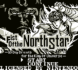
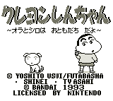

Gameboy Games A - G
Controls
- A button: Jump
- B button: Talk/Kick
- Start: Pause
- Select: [not used]
This game follows the story line of Sailor Moon from the very beginning to
the end of the first story(?). You must guide Usagi around various places
and talk to various people. Once you have talked to the right combination of
people, you will transform into Sailor Moon and enter a horizontal-scrolling
action sequence. You must fight your way through the bad guys to get to the
level boss(es). Once you defeat the level boss(es), you go to the next level
to begin the process over again.
The graphics are fair, but the action is very limited. Your only attack is
a pathetic looking kick. There is no password or save feature for this game.
You can continue, but it takes you all the way back to the beginning of the
level. A complete walkthrough
is available at TELE-Pathetic Industries.
![[Chibi Maruko-chan]](../images/GB/chibimar.gif) Chibi Maruko-chan was a "kodomo" or children's anime that was very popular
in Japan. It's based on a manga, and the story is about Little Maruko's
day-to-day adventures. The subtitle, "o-kodzukai DAISAKUSEN" means "The
big allowance fight!". The gameplay is like a Zelda-style RPG.
Chibi Maruko-chan was a "kodomo" or children's anime that was very popular
in Japan. It's based on a manga, and the story is about Little Maruko's
day-to-day adventures. The subtitle, "o-kodzukai DAISAKUSEN" means "The
big allowance fight!". The gameplay is like a Zelda-style RPG.
Controls
- A button: Jump
- B button: Shoot
- Start: Pause
- Select: [not used]
This is a Mario-style horizontal scrolling game. There are some other
carnival games that you can play as well. The game has some humorous
power-ups; one power-up turns you into a chicken that can throw eggs at the
enemy. While the game-play is not difficult, this game is cute and funny
enough to hold your attention for awhile.
Turbo Mode: Enter the password: SHINCHANTURBO in hiragana. (In other
words: (shi)(n)(cha)(n)(ta)(a)(bo)). There will be a space or two left over,
but the password will work. I haven't completely tested it, but it seems to
start you off on level 5 with faster speed. -- from Mike Koos
Controls
- A button: Punch
- B button: Jump
- Start: Pause
- Select: Raise/Lower Map
This is a unique platform game. You start on in a Zelda-like playing
field. You collect items and punch out any enemies that get in your way.
You come across doors that can take you into either a horizontal or vertical scrolling
platform mini-game. Overall, I don't know what the purpose of the game is.
Controls
- A button: ???
- B button: ???
- Start: ???
- Select: ???
More information to come.
Controls
- A button: Select an attack/defense
- B button: Undo last selection
- Start: [not used]
- Select: [not used]
This is the DBZ pseudo role-playing game that came out on the heels of the
release of the Super GameBoy. The storyline starts with the Piccolo
Tenkaichi-budokai and ends with the appearance of Vegeta. You can also compete
just in the Tenkaichi-budokai or play the bonus games.
There is not much role-playing in the game. The only choice that effects the
game is what position in the Tenkaichi-budokai you fight. The battle commands
can be picked up quickly with some experimentation.
There are some bonus games where you can build up your stats. Once you get the
feel for the combat menus, the game is fairly easy to beat. Overall, the game
has some nice graphics, but the replay value is low because the story line
never really changes much.
![[Fighbird]](../images/GB/figh_cap.gif)
Controls
- A button: [not used]
- B button: Shoot
- Start: Pause
- Select: [not used]
This is a vertical-scrolling, shoot-em-up game. I have never heard of
this anime, but it is listed in Ken Arromdee's list. You collect various
power-ups along the way. There are also two different characters you can
choose. Some strange glitches seem to throw you into different parts of the
screen which kills you quickly.

Controls
- A button: Punch
- B button: [not used]
- Start: Pause
- Select: [not used]
This is the US translation of the game based on the anime called
Hokuto no Ken. It is a street fighting game with very poor graphics.
The game play is also simple and uninteresting. You have basic punches and
kicks. You can charge up for one fireball blast, but that is the extent of
the game-play
This is a fighting game with a unique combat system. Combat is done in rounds
where each fighter gets to choose what they want to do from a battle menu (much
like RPG games). Unfortunately, I don't read Japanese and can't figure out
how to actually fight well.
![[Ganbare Goemon]](../images/GB/goe_gb.gif)
Controls
- A button: Jump
- B button: Attack
- Start: Pause
- Select: [not used]
I believe this is the game series listed as "Charge Goemon" in Ken Arromdee's
list. This is a Zelda-style game where you run around bashing enemies and
buying supplies to reach your goal; unfortunately, I have no idea what the
goal is. Decent graphics still don't cover the weak gameplay though.

Controls
- A button: Jump
- B button: Shoot
- Start: Pause
- Select: [not used]
This is a Mario-style horizontal scrolling game. You go from level to
level collecting items. Some items look like they can be used, but I
haven't played it enough to find out what these items are used for. It
has good graphics and good gameplay and will keep your interest for awhile.
Controls
- A button: Use Fire Breath
- B button: Punch
- Start: Pause
- Select: [not used]
This is a side-scrolling game where you guide Godzilla as he rampages and
destroys the ships, etc. that shoot at him. While on land, press B + Left to perform a spinning tail attack.
Controls
- A button: [not used]
- B button: Punch
- Start: Pause
- Select: [not used]
This is a puzzle game where you must guide a cute looking Godzilla (who looks
remarkably similar to the main character from Bubble Bobble) from stage
to stage. Each puzzle seems to consist of dodging the creatures chasing you
while trying to break or position the rocks to solve the puzzle.
Controls
- A button: Use Knife
- B button: Shoot
- Start: Pause
- Select: [not used]
GARMS is more or less a game to promote Bandai's Gundam variation Model series of the same name. -- from Phillip
Yee
© 1997 - Luis A. Cruz